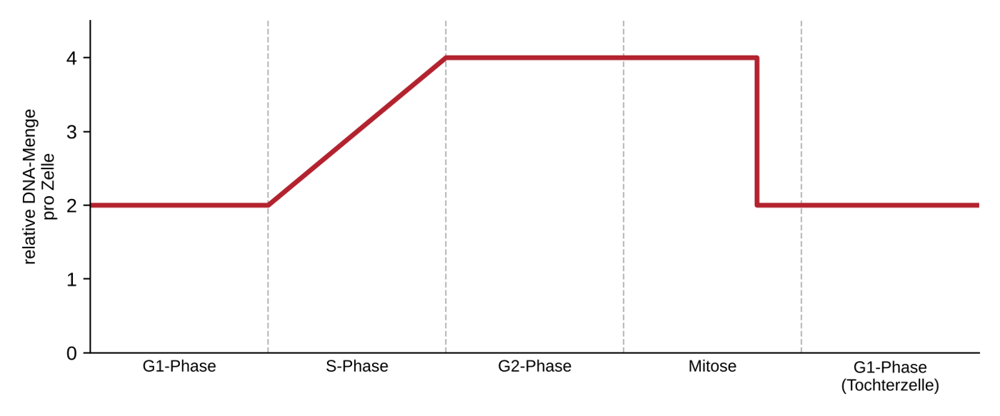

So nutzen Sie die Hilfen: Versuchen Sie es erst allein. Öffnen Sie dann Hilfe 1, danach Hilfe 2. Die Lösung dient zur Kontrolle – vergleichen Sie sie mit Ihrer eigenen Antwort und verbessern Sie diese im Hefter oder im PDF.
Aufgabe 1: Der Zellzyklus
- Beschreiben Sie mithilfe des Textes, Abb. 1 und des Klett-Schulbuchs (S. 40/41) die Vorgänge im Zellzyklus, indem Sie die Tabelle für eine menschliche Körperzelle ausfüllen!
- Zeichnen Sie den Verlauf der relativen DNA-Menge einer Körperzelle während eines Zellzyklus in das Diagramm ein (im Ausdruck)!
Hilfe 1
a) Nutzen Sie den Text: Er beschreibt jede Phase. Zählen Sie: Ein Zwei-Chromatid-Chromosom zählt als 1 Chromosom, besteht aber aus 2 Chromatiden. b) Die DNA-Menge steigt nicht sprunghaft, sondern während der ganzen S-Phase.
Hilfe 2
b) Startwert in der G1-Phase = 2. Während der S-Phase steigt der Wert auf 4, bis zum Ende der Mitose bleibt er bei 4 und fällt bei der Teilung wieder auf 2.
Lösung (erst nach eigenem Versuch öffnen!)
a) G1: Zellwachstum, Bildung von Organellen und Proteinen; Ein-Chromatid-Chromosomen (entspiralisiert); 46 / 46.
S: Replikation der DNA; aus Ein- werden Zwei-Chromatid-Chromosomen; 46 / 46 → 92.
G2: Vorbereitung auf die Teilung; Zwei-Chromatid-Chromosomen; 46 / 92.
Metaphase: maximal verdichtete Zwei-Chromatid-Chromosomen in der Äquatorialebene; 46 / 92.
Tochterzelle: Ein-Chromatid-Chromosomen (entspiralisiert); 46 / 46.
b) In der S-Phase wird die DNA repliziert, die DNA-Menge verdoppelt sich (2 → 4). In der Mitose werden die Schwesterchromatiden auf zwei Tochterkerne verteilt; nach der Cytokinese hat jede Tochterzelle wieder die ursprüngliche DNA-Menge (4 → 2). Siehe Diagramm:
S: Replikation der DNA; aus Ein- werden Zwei-Chromatid-Chromosomen; 46 / 46 → 92.
G2: Vorbereitung auf die Teilung; Zwei-Chromatid-Chromosomen; 46 / 92.
Metaphase: maximal verdichtete Zwei-Chromatid-Chromosomen in der Äquatorialebene; 46 / 92.
Tochterzelle: Ein-Chromatid-Chromosomen (entspiralisiert); 46 / 46.
b) In der S-Phase wird die DNA repliziert, die DNA-Menge verdoppelt sich (2 → 4). In der Mitose werden die Schwesterchromatiden auf zwei Tochterkerne verteilt; nach der Cytokinese hat jede Tochterzelle wieder die ursprüngliche DNA-Menge (4 → 2). Siehe Diagramm:

Aufgabe 2: Die Phasen der Mitose
- Beschreiben Sie die Vorgänge in der Prophase und in der Anaphase!
- Bringen Sie im Trainer (Phasen-Sortierer) die Stadien in die richtige Reihenfolge!
- Ordnen Sie die Chromosomen Nr. 1 bis 4 in Abb. 4 begründet je einer Phase des Zellzyklus zu und bringen Sie sie anschließend in die richtige Reihenfolge!
- Die Gelbfiebermücke (*Aedes aegypti*) besitzt nur drei Chromosomenpaare (2n = 6). Zeichnen Sie eine Zelle der Mücke in der Anaphase der Mitose und beschriften Sie Ihre Zeichnung vollständig!
Hilfe 1
a) Prophase = Vorbereitung (Verdichtung, Kernhülle, Spindel); Anaphase = Trennung. c) Achten Sie auf: Anzahl der Chromatiden (1 oder 2) und wie stark das Chromosom verdichtet ist.
Hilfe 2
c) Nur ein Chromosom besteht aus einem einzigen Chromatid – das ist nach der Trennung der Fall. Dünne, lange, glatte Fäden = entspiralisiert = Interphase (G2); stark gewellt = Spiralisierung beginnt. d) Anaphase: An jedem Pol liegen so viele Ein-Chromatid-Chromosomen, wie die Zelle Chromosomen hat (hier 6).
Lösung (erst nach eigenem Versuch öffnen!)
a) Prophase: Die Zwei-Chromatid-Chromosomen verdichten sich (Spiralisierung) und werden sichtbar. Die Kernhülle löst sich auf, der Spindelapparat wird ausgebildet. Anaphase: Die Schwesterchromatiden werden am Centromer getrennt und durch Verkürzung der Spindelfasern zu den Zellpolen gezogen.
c) Nr. 2 = G2-Phase (Zwei-Chromatid-Chromosom, noch nicht spiralisiert) → Nr. 3 = Prophase (Zwei-Chromatid-Chromosom, Beginn der Spiralisierung) → Nr. 4 = Metaphase (Zwei-Chromatid-Chromosom, maximal spiralisiert) → Nr. 1 = Anaphase (Ein-Chromatid-Chromosom, spiralisiert). Reihenfolge: 2 – 3 – 4 – 1.
d) Zeichnung: Zelle mit Spindelapparat (Spindelfasern, Zellpole/Centriolen), an jedem Pol 6 Ein-Chromatid-Chromosomen (3 Paare, je ein Chromosom jeder Größe doppelt), Spindelfasern am Centromer, keine Kernhülle; Beschriftung z. B. Zellmembran, Spindelfaser, Zellpol, Ein-Chromatid-Chromosom, Centromer.
c) Nr. 2 = G2-Phase (Zwei-Chromatid-Chromosom, noch nicht spiralisiert) → Nr. 3 = Prophase (Zwei-Chromatid-Chromosom, Beginn der Spiralisierung) → Nr. 4 = Metaphase (Zwei-Chromatid-Chromosom, maximal spiralisiert) → Nr. 1 = Anaphase (Ein-Chromatid-Chromosom, spiralisiert). Reihenfolge: 2 – 3 – 4 – 1.
d) Zeichnung: Zelle mit Spindelapparat (Spindelfasern, Zellpole/Centriolen), an jedem Pol 6 Ein-Chromatid-Chromosomen (3 Paare, je ein Chromosom jeder Größe doppelt), Spindelfasern am Centromer, keine Kernhülle; Beschriftung z. B. Zellmembran, Spindelfaser, Zellpol, Ein-Chromatid-Chromosom, Centromer.
Aufgabe 3: Mitose unter dem Mikroskop
- Ordnen Sie den Bildern A bis F im Klett-Schulbuch (S. 40, Abb. 1) die passende Phase zu und begründen Sie Ihre Zuordnung jeweils mit einem Merkmal!
- Kennzeichnen Sie in Abb. 2 (im Ausdruck oder digital) je eine Zelle in der Interphase, in der Metaphase und in der Anaphase und begründen Sie Ihre Wahl kurz!
- Erklären Sie, warum sich in Abb. 2 die meisten Zellen in der Interphase befinden!
Hilfe 1
a) Achten Sie auf: Ist eine Kernhülle zu erkennen? Liegen die roten Chromosomen in einer Ebene? Gibt es zwei getrennte Gruppen? c) Denken Sie an die Dauer der einzelnen Phasen (Klett S. 41).
Hilfe 2
Typische Merkmale: Interphase – rundlicher Kern, kein Spindelapparat; Metaphase – Chromosomen in einer Linie in der Mitte; Anaphase – zwei Gruppen wandern auseinander; Telophase – zwei Tochterkerne, Einschnürung.
Lösung (erst nach eigenem Versuch öffnen!)
a) Die Lösung finden Sie im Lösungsteil des Klett-Schulbuchs bzw. bei Ihrer Lehrkraft (Abbildung urheberrechtlich geschützt). Vergleichen Sie Ihre Begründungen mit den typischen Merkmalen aus Hilfe 2.
b) Interphase: runder, gleichmäßig gefärbter Zellkern, oft mit dunklem Kernkörperchen, keine einzelnen Chromosomen. Metaphase: die Chromosomen liegen als dunkle Linie bzw. Platte in der Zellmitte (z. B. Zelle am rechten Bildrand). Anaphase: zwei dunkle Chromosomengruppen, die auseinanderweichen. Lassen Sie Ihre Auswahl von der Lehrkraft prüfen.
c) Die Interphase ist die mit Abstand längste Phase des Zellzyklus (Stunden), die Mitose dauert nur kurz (ca. 1 Stunde). Deshalb befindet sich zu jedem Zeitpunkt der größte Teil der Zellen in der Interphase.
b) Interphase: runder, gleichmäßig gefärbter Zellkern, oft mit dunklem Kernkörperchen, keine einzelnen Chromosomen. Metaphase: die Chromosomen liegen als dunkle Linie bzw. Platte in der Zellmitte (z. B. Zelle am rechten Bildrand). Anaphase: zwei dunkle Chromosomengruppen, die auseinanderweichen. Lassen Sie Ihre Auswahl von der Lehrkraft prüfen.
c) Die Interphase ist die mit Abstand längste Phase des Zellzyklus (Stunden), die Mitose dauert nur kurz (ca. 1 Stunde). Deshalb befindet sich zu jedem Zeitpunkt der größte Teil der Zellen in der Interphase.
Aufgabe 4: Wozu dient die Mitose?
- Ordnen Sie die Beispiele durch Ankreuzen der passenden Bedeutung der Mitose zu!
- Begründen Sie, warum die beiden Tochterzellen einer Mitose genetisch identisch sind!
Hilfe 1
a) Fragen Sie sich jeweils: Entstehen mehr Zellen, damit der Körper größer wird (Wachstum), damit Zerstörtes ersetzt wird (Regeneration) oder damit ein neues Lebewesen entsteht (ungeschlechtliche Fortpflanzung)?
Hilfe 2
Für b) ist entscheidend, was vor der Mitose passiert (S-Phase) und was in der Anaphase getrennt wird.
Lösung (erst nach eigenem Versuch öffnen!)
a) Säugling wächst: Wachstum. Schürfwunde heilt: Regeneration. Steckling: ungeschlechtliche Fortpflanzung. Darmschleimhaut: Regeneration. Erdbeer-Ausläufer: ungeschlechtliche Fortpflanzung. Knochenbruch: Regeneration.
b) In der S-Phase wird die DNA identisch kopiert, sodass beide Schwesterchromatiden dieselbe Erbinformation tragen. In der Anaphase erhält jeder Pol genau ein Chromatid jedes Chromosoms – beide Tochterzellen besitzen damit die vollständige, identische Erbinformation.
b) In der S-Phase wird die DNA identisch kopiert, sodass beide Schwesterchromatiden dieselbe Erbinformation tragen. In der Anaphase erhält jeder Pol genau ein Chromatid jedes Chromosoms – beide Tochterzellen besitzen damit die vollständige, identische Erbinformation.
Basiswissen: Mitose und Kennzeichen des Lebens
- Ordnen Sie der Mitose zwei Kennzeichen des Lebens zu und begründen Sie Ihre Zuordnung jeweils mit einem Beispiel!
Hilfe 1
Im Basiswissen „Kennzeichen des Lebens“ stehen sechs Kennzeichen. Bei welchen entstehen neue Zellen?
Hilfe 2
Denken Sie an die Entwicklung von der Zygote zum Erwachsenen und an Einzeller wie die Hefe, die sich durch Teilung vermehren.
Lösung (erst nach eigenem Versuch öffnen!)
Wachstum und Individualentwicklung: Aus der Zygote entsteht durch viele Mitosen ein Organismus aus Billionen Zellen; auch Wundheilung und Zellerneuerung beruhen auf Mitosen.
Fortpflanzung (asexuell): Eukaryotische Einzeller wie Hefen vermehren sich durch Mitose; viele Pflanzen bilden Ableger oder Stecklinge.
Auch möglich: Aufbau aus Zellen – alle Zellen entstehen durch Teilung aus anderen Zellen.
Fortpflanzung (asexuell): Eukaryotische Einzeller wie Hefen vermehren sich durch Mitose; viele Pflanzen bilden Ableger oder Stecklinge.
Auch möglich: Aufbau aus Zellen – alle Zellen entstehen durch Teilung aus anderen Zellen.
Wahlaufgabe W1: Kontrollpunkte und Krebs
- Stellen Sie eine Hypothese auf, welche Folgen ein Ausfall des G1-Kontrollpunkts für den Organismus hätte!
- Stellen Sie eine Hypothese auf, welche Teilschritte der Mitose am M-Kontrollpunkt überprüft werden!
Hilfe 1
Was würde passieren, wenn Zellen mit beschädigter DNA sich trotzdem teilen?
Hilfe 2
M-Kontrollpunkt: Bevor die Schwesterchromatiden getrennt werden, muss etwas korrekt verbunden sein.
Lösung (erst nach eigenem Versuch öffnen!)
a) Zellen mit DNA-Schäden würden sich weiter teilen; Schäden (Mutationen) würden an alle Tochterzellen weitergegeben und könnten sich anhäufen. Es kann zu unkontrollierter Zellteilung und damit zu Krebs kommen.
b) Am M-Kontrollpunkt wird geprüft, ob alle Chromosomen in der Äquatorialebene angeordnet und an beiden Centromerseiten korrekt mit Spindelfasern verbunden sind, bevor die Anaphase beginnt.
b) Am M-Kontrollpunkt wird geprüft, ob alle Chromosomen in der Äquatorialebene angeordnet und an beiden Centromerseiten korrekt mit Spindelfasern verbunden sind, bevor die Anaphase beginnt.
Wahlaufgabe W3: Fehler im Text
- Berichtigen Sie den Text so, dass nur wahre Aussagen entstehen! (Für falsche Ausbesserungen gibt es in Prüfungen Punktabzug.)
Hilfe 1
Es sind fünf Fehler im Text. Prüfen Sie besonders Fachbegriffe, die ähnlich klingen, und Zahlen.
Hilfe 2
Prüfen Sie: Centriol oder Centromer? RNA oder DNA? Welche Phasen gibt es in der Interphase? Wie viele Mitosephasen kennen Sie? Was passiert in der Metaphase wirklich?
Lösung (erst nach eigenem Versuch öffnen!)
Fehler: Centriol → Centromer; RNA → DNA; G3-Phase → G2-Phase; drei Phasen → vier Phasen (Prophase, Metaphase, Anaphase, Telophase); in der Metaphase werden die Chromatiden nicht getrennt, sondern in der Äquatorialebene angeordnet – zu den Polen gezogen werden sie in der Anaphase. (Die übrigen Aussagen sind richtig.)
Wahlaufgabe W2: Mitose im Mikroskop
- Mikroskopieren Sie das Präparat und zeichnen Sie je eine Zelle in der Interphase, Metaphase und Anaphase auf einem Blatt!
Hilfe 1
Suchen Sie bei kleiner Vergrößerung den Bereich direkt hinter der Wurzelhaube, wechseln Sie dann zur stärkeren Vergrößerung.
Hilfe 2
Zeichnen Sie nur, was Sie sehen: Zellwand, Kern bzw. Chromosomen; Vergrößerung und Beschriftung nicht vergessen.
Lösung (erst nach eigenem Versuch öffnen!)
Keine Musterlösung – lassen Sie Ihre Zeichnungen von der Lehrkraft prüfen.
Sichern: Fachsprache und Denkfallen
Erst selbst erklären, dann vergleichen. Übernehmen Sie die Begriffe in Ihr Glossar.
Lösung: Fachbegriffe
- Interphase: Abschnitt des Zellzyklus zwischen zwei Mitosen (G1-, S- und G2-Phase): Wachstum, Stoffwechsel, Replikation.
- S-Phase: Synthesephase: Die DNA wird repliziert; aus Ein-Chromatid- werden Zwei-Chromatid-Chromosomen.
- Spindelapparat: Fasern aus Proteinen, die an den Centromeren ansetzen und die Chromatiden zu den Zellpolen ziehen.
- Äquatorialebene: Mittelebene der Zelle, in der sich die Chromosomen in der Metaphase anordnen.
- Anaphase: Mitosephase, in der die Schwesterchromatiden getrennt und zu den Zellpolen gezogen werden.
- Cytokinese: Teilung des Zellplasmas nach der Kernteilung; es entstehen zwei Tochterzellen.
- G0-Phase: Ruhephase außerhalb des Zellzyklus bei Zellen, die sich nicht mehr teilen (z. B. viele Nervenzellen).
Lösung: Denkfallen
- „In der Interphase ruht die Zelle.“ – falsch – In der Interphase wächst die Zelle, bildet Proteine und Organellen und repliziert in der S-Phase ihre DNA.
- „Die DNA wird während der Mitose verdoppelt.“ – falsch – Die Replikation findet vorher in der S-Phase der Interphase statt. In der Mitose wird nur verteilt.
- „Nach der Mitose besitzt jede Tochterzelle nur noch die Hälfte der Chromosomen.“ – falsch – Jede Tochterzelle erhält alle 46 Chromosomen; halbiert wird nur die Zahl der Chromatiden pro Chromosom.
Fallakte · Befund Kapitel 2
Familie Sommer · Ein Karyogramm für das Baby – Kapitel 2: „Warum dauert das so lange?“
- Warum müssen sich die Zellen erst teilen?
- In welcher Mitosephase werden die Chromosomen fotografiert? Begründung
- Wirkung von Colchicin
- Aus wie vielen Chromatiden besteht jedes Chromosom im Karyogramm?
Tipp
Lesen Sie das Kapitel 2 der Fallakte noch einmal und suchen Sie in den Pflichtaufgaben dieses Moduls die passenden Fachbegriffe.
Lösung (erst nach eigenem Versuch öffnen!)
- Nur während der Zellteilung liegen die Chromosomen stark verdichtet als Transportform vor und sind im Lichtmikroskop einzeln zu erkennen. In der Interphase ist das Chromatin entspiralisiert.
- In der Metaphase: Die Chromosomen sind am stärksten verdichtet und liegen in der Äquatorialebene.
- Colchicin verhindert die Bildung der Spindelfasern. Die Chromatiden können nicht getrennt werden, die Zellen bleiben in der Metaphase stehen und reichern sich an.
- Aus zwei identischen Schwesterchromatiden (Zwei-Chromatid-Chromosom), die am Centromer zusammenhängen.